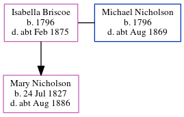

Hannah Nicholson (née Lumley)
[ Home ] | [ Calendar ] | [ Surnames Index ] | [ Errors ] | [ Family History ]Hannah Lumley and married Michael Nicholson (with whom she had 1 child, Michael) in Ryton, Tyne and Wear, England on 1 Jan 17911.
Children
- Michael was born in 1796
Citations
- Northumberland And Durham Marriages - Findmypast
Media
Northumberland and Durham Marriages - GBPRS/M/356098025/3
Family Tree
Map
Generated by ged2site. Last updated on Jul 3, 2024
Known Issues
Can't find relationship with the home person